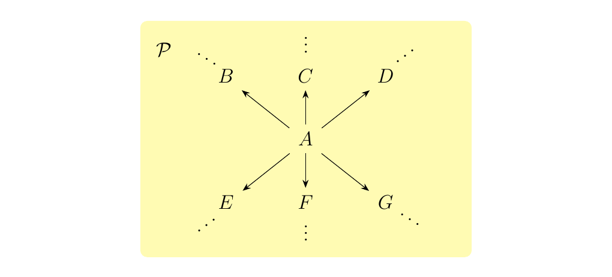
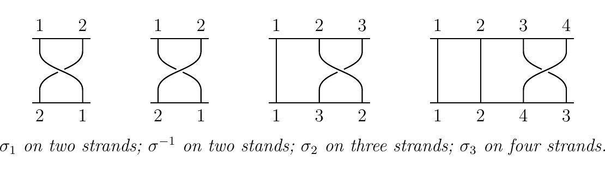

1.4. Examples of Categories
Now that we have some idea of basic categories and a few examples in mind on how they work, we introduce more examples in this section to deepen our understanding. Categories are extremely abundant in mathematics, so it is not difficult to find examples.
Without proof, we comment that the categories below truly form categories. To discuss these categories, we will use the notation in the leftmost column. \begin{center}
| Category | Objects | Morphisms |
|---|---|---|
| \(\finset\) | Finite sets \(X\) | Functions \(f: X \to Y\) |
| \(\vect_K\) | Vector spaces over \(k\) | Linear transformations \(T: V \to W\) |
| \(\mon\) | Monoids \((M, \cdot)\) | Monoid homomorphisms \(\psi: M \to M'\) |
| FinGrp | Finite Groups | Group homomorphisms \(\phi: (G, \cdot) \to (H, \cdot)\) |
| \(\ab\) | Abelian Groups \((G, \cdot)\) | Group homomorphisms |
| FinAb | Finite Abelian Groups \((G, \cdot)\) | Group homomorphisms |
| Ring | Rings \((R, \cdot, +)\) | Ring homomorphisms \(\phi: (R, \cdot, +) \to (S, \cdot, +)\) |
| CRing | Commutative Rings \((R, \cdot, +)\) | Ring homomorphisms |
| \(\ring\) | Rings \((R, \cdot, +)\) with identity \(1 \ne 0\) | Ring homomorphisms |
| \(R\rmod\) | \(R\)-modules \((M, +)\) | \(R\)-module homomorphisms |
| \(\fld\) | Fields \(k\) | Field homomorphisms |
| \(\top^*\) | Topological spaces \((X, x_0)\) with basepoint \(x_0 \in X\) | Continuous functions preserving basepoints |
| Toph | Topological spaces \((X, \tau)\) | Homotopy equivalence classes |
| Haus | Hausdorff topological spaces \((X, \tau)\) | Continuous functions |
| CHaus | Compact Hausdorff topological spaces \((X, \tau)\) | Continuous functions |
| DMan | Differentiable manifolds \(M\) | Differentiable functions \(\phi: M \to M'\) |
| LieAlg | Lie algebras \(\mathfrak{g}\) | Lie algebra homomorphisms |
| Grph | Graphs \((G, E, V)\) | Graph homomorphisms |
\end{center} Now that we are aquainted with some of the categories that we'll be working with, we'll introduce more interesting categories that become useful. However, these categories are less trivial than the ones above, i.e it takes a bit of work to see how they form into categories.
Let \(X\) be a nonempty set. We can regard \(X\) as a category where
- Objects. All elements of \(X\).
- Morphisms. All morphisms are identity morphisms, and there are no morphisms between any two distinct objects.
This category, while fairly trivial, is called a discrete category.
Consider any of the categories \(\mon\), \(\grp\), \(\ring\), or \(R\rmod\). For any object of these categories, we can create the notion of a grading. Such a concept is a useful algebraic construction which appears in different areas of mathematics. For simplicity, we'll consider a grading on a group.
A group \(G\) is said to be **\(\mathbb{N**\)-graded} if there exists a family of groups \(G_1, G_2, \dots, G_n, \dots\) such that \(G = \bigoplus_{i=1}G_i\). An example of this is the group \((\mathbb{R}[x], +)\), the single variable polynomials in one variable. To see that this is graded, observe that any polynomial \(p(x)\) is of the form
Note that \(p(x)\) consists of "components", i.e., different powers of \(x\). If we let
then we see that \(\mathbb{R}[x] = \bigoplus_{i = 0}\mathbb{R}_n[x]\).
More generally, if \(\lambda\) is an indexing set, we say a group \(G\) is \(\lambda\)-graded if there is a family of groups \(G_i, i \in \lambda\) such that \(G = \bigoplus_{i \in \lambda}G_i\). In addition, if \(G = \bigoplus_{i \in \lambda}G_i\) and \(H = \bigoplus_{i \in \lambda}H_i\) are two graded groups such that \(\phi_i:G_i \to H_i\) is a group homomorphism, then we say \(\phi: G \to H\) is a \(\lambda\)-graded homomorphism.
With that said, we can define the category of graded groups to be the category GrGrp, (read as "graded groups") described as
- Objects. \(\lambda\)-graded groups \(G = \bigoplus_{i \in \lambda}\) for some set \(\lambda\)
- Morphisms. Graded homomorphisms between graded groups.
As we said before, this produces many graded categories, including GrMon, GrRing, \(**GrMod**_R\) etc.
A monoid is a set \(M\) equipped with an operation \(\cdot: M \times M \to M\) and an identity \(e\) such that \(e\cdot m = m \cdot e = m\) for all \(m \in M\). In other words, monoids are like groups, in that we drop the requirement of an inverse.
Let \(\cc\) be a category with one object; denote this object as \(\bullet\). As we have one object, we have one homset. We can then interpret \(M\) as a category by setting
Thus each \(m \in M\) corresponds to a morphism. So, we can write each morphism in the category as \(f_{m}: \bullet \to \bullet\) for some \(m \in M\). We then write \(f_{e} = 1_{\bullet}\), the identity, and more generally define composition in the category as
Since \(M\) is a monoid, and its multiplication is associative, we see that composition defined in this way is also associative. Further, for each \(f_m\), we have that
since \(e \cdot m = m \cdot e = m\) in the monoid \(M\). Thus we can interpret monoids as one object categories.
A category \(\mathcal{P}\) is said to be thin or a preorder if there is at most one morphism \(f: A \to B\) for each \(A, B \in \mathcal{P}\). The simplest thin categories are of the form below
but they may also have more complex shapes such as the category below.
 Thin categories are very common since we often times only care about one single type of relation between any two objects. An example of such a relation is a binary relation; for any two real numbers \(x, y \in \rr\), we know that either \(x \le y\) or \(y \le x\).
This intuition is actually not very far off. Given a thin category \(\mathcal{P}\), define the binary relation \(\le\) on the objects \(\ob(\mathcal{P})\) as follows. For any pair of objects \(A, B \in \mathcal{P}\), we have that
Some things are to be said about this relation:
- For each object \(A\), there always exists a morphism \(A \to A\) (namely, the identity). This implies that \(A \le A\) for all objects \(A\), so that \(\le\) is reflexive.
- If \(f: A \to B\) and \(g: B \to C\), then we have that \(A \le B\) and \(B \le C\). Since we may compose morphisms, we have that \(g \circ f: A \to C\). Therefore, \(A \le C\), so that \(\le\) \(\le\) is transitive.
Hence, \(\mathcal{P}\) is really just a set with a reflexive and transitive binary relation. However, this is exactly the definition of a preorder! Therefore, preorders \(P\) can be regarded as categories with at most one morphism between any two objects, and vice versa.
Preorders can also turn into partial orders, which have the axiom that
or linear orders, where for any \(p, p'\) we have that \(p \le p'\) or \(p' \le p\).
Here we introduce some examples of thin categories.
- Natural Numbers. The sets \(\{1, 2, \dots, n\}\) for any \(n \in N\) are linear orders, each of which forms a category as pictured below.
In this figure, the loops represent the trivial identity functions.
This example can also be generalized to include \(\mathbb{N}, \mathbb{Z}, \mathbb{Q},\) and \(\mathbb{R}\). * Subsets. Let \(X\) be a set. Then one can form a category \(\text{Subsets}(X)\) where the objects are subsets of \(X\) and the morphisms are inclusion morphisms. Hence, there is at most one morphism between any two sets.
Since there is at most one morphism between any two objects of the category, we see that this forms a thin category, and hence a partial ordering. What this then tells us is that subset containment determines an ordering, specifically a partial ordering. * Open Sets. Let \((X, \tau)\) be a topological space. Define the category \(\open(X)\) to be the category whose objects are the open sets of \(X\) and morphisms \(U \to V\) are inclusion morphisms \(i: U \to V\) whenever \(U \subset V\). Hence, there is at most one morphism between any two open sets, so that this also forms a preorder. * Subgroups. Let \(G\) be a group. We can similarly define the category \(**SbGrp**(G)\) to be the category whose objects consists of subgroups \(H \le G\), and whose morphisms are inclusion homomorphisms. This is just like the last example; and, as in the last example, there is at most one morphism between any two subgroups \(H, K\) of \(G\) (either \(i: H \to K\) or \(i: K \to H\)). Hence, we can place a partial ordering on this, so that subgroup containment is a partial ordering. * Ideals. Let \(R\) be a ring. Then we can form a category \(**Ideals**(R)\) whose objects are the ideals \(I\) of \(R\) and whose morphisms are inclusion morphisms. As we've seen, this forms a thin category.
Let \(B_n\) be the set of braids on \(n\) strands. Recall that \(B_n\) forms a group where the group product is composition, and where the identity is simply \(n\) parallel strands. Each braid group actually has a nice presentation:
where (\texttt{1}) holds only when \(1 \le i \le n - 2\) and (\texttt{2}) hold only when \(|i - j| > 1\). These two laws are imposed so that they match our geometric intuition, so that if we were to replace the strands with real, phyiscal ropes then they would behave the same way.
Each generator \(\sigma_i\) is interpreted as swapping the \(i\)-th strand over the \((i+1)\)-th strand, while \(\sigma_i\) is swapping the \((i+1)\)-th strand over the \(i\)-th strand. Below are some example generators.
 The reason why we care about these generators is because every braid can be expressed by over and under crossings (although such an expression may not be unique). Now, the group multiplication in this group is simply stacking of braids. For example, the braid
can be obtained by stacking \(\sigma_1, \sigma_2\) and then \(\sigma_1\) again. Hence, the braid \(\sigma_1\sigma_2\sigma_1\).
Now with the family of braid groups \(B_1, B_2, \dots,\) we can form a category \(\mathbb{B}\) as follows.
- Objects. Positive integers \(1,2, \dots,\)
- Morphisms. For any pair of positive integers \(n,m\), we have that
Hence we only have morphisms \(f: n \to m\) when \(n = m\). Furthermore, each morphism is a braid. Composition is then group multiplication. The identity for each object \(n\) is the identity braid of \(n\) parallel strands. As group multiplication is associative, the composition in this category is associative, so we see that this truly does form a category.
The following examples demonstrates again that morphisms are not always functions, or mappings of some kind.
Let \(R\) be a ring with identity \(1 \ne 0\). For every pair of positive integers \(m, n\), let \(M_{m, n}(R)\) be the set of all \(m \times n\) matrices. Now recall that for an \(m \times n\) matrix \(A\) and a \(n \times p\) matrix \(B\), the product \(AB\) is an \(m \times p\) matrix.
where \(\displaystyle c_{ij} = \sum_{k= 1}^{n}a_{ik}b_{kj}\). This can rephrased as saying that we have a multiplication map as below.
Since matrix multiplication is associative, we can also say that the above mapping is associative.
This however should feel sort of similar to the process of composition, say for example in \(\Set\), where if we have functions \(f: X \to Y\) and \(g: Y \to Z\) we obtain a function \(g \circ f: X \to Z\). If we follow this intuition, we can consider a matrix \(A\) of shape \(m \times n\) as a morphism from \(m \to n\). Similarly, \(B\) can be regarded a morphism from \(n \to p\). This together implies that \(AB\) is a morphism from \(m \to p\). This should feel strange, because we are used to thinking of a morphism as some kind of function. But it works; we can form a category where
- Objects. The objects are positive integers \(m\).
- Morphisms. The morphisms are matrices. Specifically, for any pair of objects \(m,n\),
Here, composition is simply matrix multiplication.
Observe now that our initial observation regarding matrix multiplication translates to a statement regarding whenever two matrices \(A\) and \(B\) are "composable" (i.e., whenever we can multiply them). That is, our mapping \(M_{m,n}(R)\times M_{n,p}(R) \to M_{m, p}\) can be rephrased as composition
Associativity of matrix multiplication translates to associativity of composition. Finally, note that for each object (positive integer) \(n\), the identity morphism is simply the identity matrix.
Thus we see that we have all the necessary ingredients to declare this to be a category.
Let \(G\) be a group, and recall that \(G\) is equipped with some binary operator \(\cdot: G \times G \to G\) which satisfies associativity. Because this is a two-variable function on \(G\) every \(g \in G\) induces a map
This then gives rise to a collection of maps \(f_g: G \to G\) for each \(g \in G\), which we can picture as below.
In particular, if \(e\in G\) is the identity, then \(f_e = 1_G\). Moreover, composition of these maps is associative. Thus we can think of this as a category, specifically one with one object, whose morphisms \(f:G \to G\) are induced by the elements \(g \in G\). Also, note that each such map is an isomorphism, since its inverse is given by \((-) \cdot g^{-1}: G \to G\).
Now we can step up a level of generality. Let \(X\) be a set, and suppose we have a group action \(\phi: X \times G \to X\). If we denote \(\phi(g, -):= \phi_h: X \to X\) for each \(g \in G\), then since \(\phi\) is a group action we have that \(\phi_g \circ \phi_{g'} = \phi_{g\cdot g'}\) and \(\phi_e = 1_X\). Hence composition is associative and we have a well-behaved identity morphism. Usually, when we draw group actions, we think of something like this:
What we're seeing is that group actions can be phrased as a category with one object, with morphisms as isomorphisms. This generalizes our previous discussion, which makes sense since groups are trivial examples of group actions by setting \(X = G\).
{\large Exercises \vspace{0.2cm}}
- *1.* Let \(n\) be a positive integer, and consider a group \(G\) such that \(g^n = 1\) for all elements \(g \in G\). Show that if we take these groups to be our objects, and group homomorphisms to be our morphisms, then this forms a category \(\grp_n\). \vspace{0.2cm}
-
*2.* Consider an infinite family of groups \(G_1, G_2, \dots, G_n, \dots\) Show that we have a category \(**G**\) where
- Objects. The positive integers \(1, 2, \dots, n, \dots\)
- Morphisms. For any two positive integers \(n,m\),
we define
$$ \hom_{G}(n,m) = \begin{cases} G_n & \text{if } n = m\ \varnothing & \text{otherwise}. \end{cases}
$$ * *3. Let \(f: X \to Y\) be a function between two sets. We say \(f\) has the "finite-to-one" property if \(f^{-1}(y)\) is always a finite set for all \(y \in Y\). Show that we have a (large) category, denoted \(\Set_{FTO}\), where * Objects. All sets \(X\). * Morphisms. functions \(f\) with the finite-to-one property. * 4.* Let \(X\) and \(Y\) be sets. A binary relation \(R\) on \(X\) and \(Y\) is any subset of \(X \times Y\). For two elements \(x \in X, y \in Y\), we then write \(xRy\) if \((x,y) \in R\). Binary relations can be specialized to describe functions and order relations in set theory.
Show that we can form a category where * Objects. All sets \(X\). * Morphisms. For any two sets \(X,Y\), we write, by abuse of notation, \(R: X \to Y\) as a morphism for each relation \(R\) on \(X\) and \(Y\). * *5. Recall that for a two metric spaces \((M, d_M)\) and \((N, d_N)\), where \(d_M: M \times M \to M\) and \(d_N: N \times N \to N\) are the metrics, we say a function \(f: M \to N\) is a Lipschitz-1 map with Lipschitz constant* 1 if
for all \(x, y \in M\). Using this concept, show that we have a category where * Objects. Metric spaces \(M\) * Morphisms. Lipschitz-1 maps with Lipschitz constant 1. * *6. Let \(G\) be a group. We say that \(G\) acts on a set \(X\) if we have a function \(\phi: G \times X \to X\) such that * \(\bullet\) \(e \cdot x = x\) * \(\bullet\) \(h\cdot (g \cdot x) = (hg)\cdot x\) * Objects. All \(G\)-sets (i.e., sets with a group action by \(G\)) * Morphisms.* \(G\) equivariant maps.